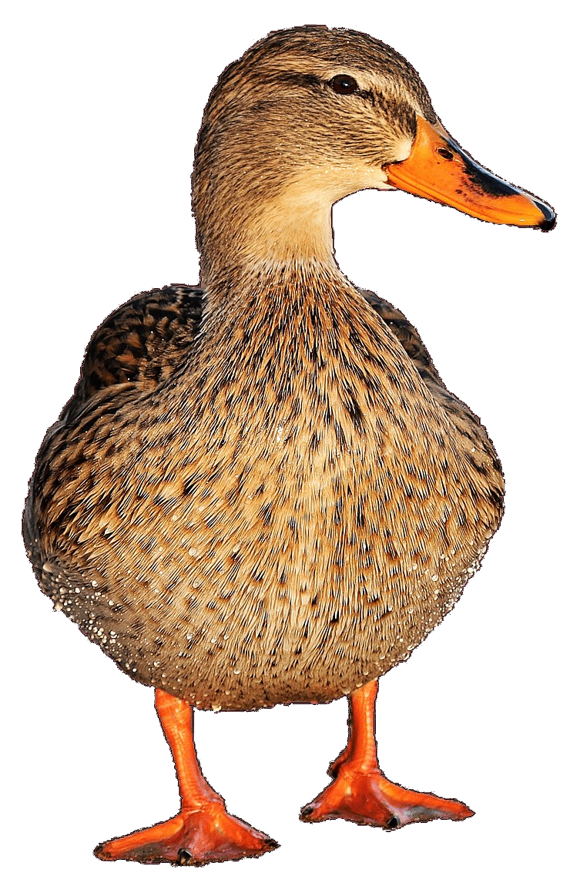

Caring for Ducks
Caring for a pet duck is a wonderful and new experience to many people! There so many
different kinds of ducks, but their basic needs are all the same. Like other pets, ducks
require food, shelter and protection from predators, a clean environment and love.

How to Care for a Duck

Duckling Care
Ducklings require a little more care than adult ducks. They require a special brooding area where they can grow and develope into adolecent ducks ready for the outdoors. A brooder can be as simple as your bathtub where the ducklings can play around and make a mess with their basic needs met. In a brooding area, ducklings require...
- Bedding: towels, hay, washclothes, old shirts
- Heat lamp: for a ducklings first week they require a temperature of 90 degrees, then decreaing temperatures of a degree a day until they are acclimated to the outside temperatures
- Water: shallow dishes for water are necessary so ducklings do not drown, water needs to be replaced requently to ensure its cleanliness
- Food: ducklings require starter waterfowl feed or chick feed, they also enjoy cut up greens like lettuce to add more nutrients to their diets

Adult Duck Care
Adult ducks require similar needs to other pets; housing, food, water, and love
- Housing: Ducks need room to move around, your home or a large enough pen outside (providing weather is durable) can do the trick.
- Food: Ducks require a diet of about 15% protien and should be able to graze freely throughout the day. Feed can be purchased at local pet stores, some reputable manufacturers of duck food are Purina, Mazuri, or Gunter. Also, corn, carrots and greens can be used as treats for your duck.
- Water: Ducks require cool, clean drinking water. This can be provided from an outdoor pond or shallow bucket. The water should be deep enough for ducks to submerge their bill. Water must be changed daily.
- Love: Ducks are social creatures. They require interactions with other ducks and their owners. Talking to your duck can help creat a bond between you and them. Ducks also enjoy playing in water and with little toys to ensure their happiness :)